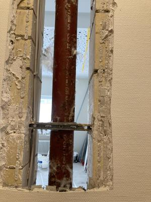
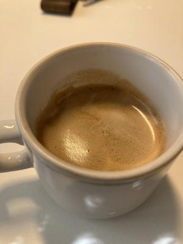

Geräusche sammeln
1. „Wuhhhh“….Wuuhhhh“...“Wuuuhhhhh“ Langsam kommt mein Bewusstsein an die Oberfläche. Ochnö. Der Wecker hat noch nicht mal geklingelt. Das da draußen ist der Laubbläser. Noch vor 7 Uhr! Was für einen Start in den Tag. „Wuuuhhhh“ Nee, ich stehe noch nicht auf. „Wuuhhhhh“ Doch nach noch einigen Malen hin und her drehen, hat der Laubbläser mich doch vorzeitig aus dem Bett geblasen.
Beim Blick auf die Uhr sehe ich, dass heute der 8.9.2026 ist. Also Zeit für die Miniblogparade #8sammeln von Susanne Wagner. Acht achtsame Momente sammeln.
Mit dem Start heute liegt mein Fokus irgendwie auf Geräusche.
2. Auf dem Weg in mein Büro in der Klinik laufen mir zwei Handwerker über den Weg. „Ach, dann geht es heute wohl nach Monaten im Büro neben mir weiter.“ frage ich die Sekretärin. „Sieht so aus.“ Das Büro hat im Frühjahr einen Wasserschaden erlitten. So typisch 70ziger Jahre Flachbau. Das Dach ist gemacht, aber das Zimmer nicht. Heute kommt die Decke dran. Leider sind die Wände zwischen den Büros nicht sehr dick. Mitten im Patientengespräch: „Klong, Klong, Sirrrrrrrr, Sirrrrrr, Rumps….“ Mein Patient zuckt zusammen. Ich erkläre was nebenan passiert und hoffe, dass der Krach nicht zu lange dauert. Zum Glück sind es immer nur kurze Passagen.
{kind=link}

Blick in die Baustelle
3. Hmmm, gibt es nicht auch angenehme Geräusche? Während ich Briefe korrigiere habe ich das Fenster auf. Und da sind sie - die angenehmen Geräusche. Einige der kleinen Kinder aus dem Mutter-Kind-Setting sind mit ihren Müttern vor der Tür und erzählen Geschichten oder singen. Wie schön.
4. Nachmittag. Zeit für einen Espresso. Da ich letzte Woche über Pausen geschrieben habe, nehme ich mir vor nur den Kaffee zu machen und bewusst zu trinken und sonst nichts. Als erstes plätschert das Wasser in den Behälter. Beim Anschalten der Maschine brummt und schüttelt sie sich als wenn sie voller Vorfreude wäre. Dann ist es soweit „Zischschh, als der Dampf entweicht und dann ein leises, langsames Fließgeräusch und der Espresso läuft duftend mit einer hellen Crema in die Tasse. Ach, diese Geräusche mag ich sehr.
{kind=link}

Espresso
5. „Klack, Klack“ ah, die Putzfrau ist da. Sie versucht immer leise zu sein, weil die Kammer direkt an mein Büro reicht. Aber es ist alles so eng. „Raschel, Plumps, Plumps, Plumps.“ Was war das? Kein bekanntes Geräusch. Ich schaue nach. Sie entschuldigt sich. Nicht schlimm, ich hatte gerade keinen Patienten im Büro. Sie hat zu viel Toilettenpapier geliefert bekommen. Der Lieferant hat alles aufs Regal gestapelt und als sie den Putzwagen heraus holt ist der Turm zusammengebrochen und runter gefallen. Gemeinsam räumen wir rasch alles wieder zusammen.
6. Es ist einer dieser schönen Spätsommertage mit einem warmen Abend. Wir sitzen auf der Terrasse. Es ist ein friedlicher Abend. Wir lesen und unterhalten uns. Ruhig ist es allerdings nicht. Es scheppert und klirrt. Jemand lacht ziemlich übertrieben. Ich schaue auf. Auf dem Platz schmeißt ein Junge seinen Tretroller über den Platz und Lacht wenn es ordentlich scheppert. Das Spiel geht noch eine ganze Weile so weiter. Schade, dass ihm das scheinbar mehr Spaß macht als zu fahren. Es nervt!
7. Es wird dunkel. Im Dämmerlicht kommen die Fledermäuse. Ein Wind kommt auf und alles wird vom Rauschen der Blätter begleitet. Ich liege auf den warmen Terrassenfliesen und schaue in den Himmel. Über mir der Orion. Wie schön! Mit dem Rauschen der Blätter im Ohr gehen wir rein.
8. Ein letzter Spaziergang mit der Fellnase. Ein Teil der Straßenlaternen ist schon aus. Außer dem Wind ist es ruhig. Auf einmal ein Sirren und Musik. Irritiert schaue ich mich um. Da kommt ein Elektrotretroller mit zwei Jugendlichen angebraust. Auf der Trittfläche eine große Lautsprecherbox. Sie haben Spaß.
So schließt mein Tag mit acht Geräuschen. Und ich konnte sie nicht achtsam ohne Bewertung aufnehmen. Spannend wie schnell die Bewertung gleich parat steht. Aber ich habe sie heute bewusster wahrgenommen.
Wie geht es Dir mit Geräuschen im Alltag? Genervt oder Schön?
Kommentare